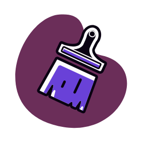

ColorLens

Aplique os filtros para simular diferentes tipos de daltonismo e outras funcionalidades
Filtros Padrões
Ajustes Rápidos
Personalização
Filtros Genéricos:
Protanopia
Deuteranopia
Tritanopia
Protanomalia
Deuteranomalia
Tritanomalia
Achromatopsia
Monocromia
Resetar
Ajustes:
Contraste
%
Saturação
%
Opções:
Modo Noturno
Reduz o cansaço visual.
Idioma
Selecione o idioma da interface.
Português
Português
English
Resetar
Filtros Personalizados:
Cores Base:
Vermelho
Verde
Azul
Resetar Cores